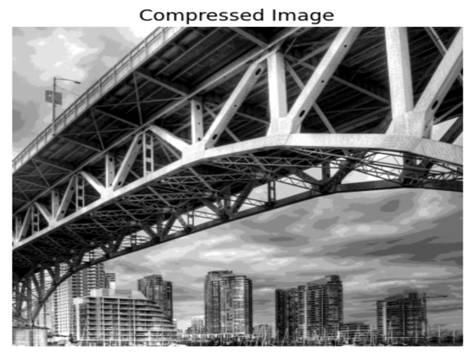

WALL-E
Self Balancing and Line Following Robot

WALL-E is a summer workshop conducted by the Society of Robotics and Automation for the fresh undergraduates. WALL-E is a small robot capable of self balancing and line following task simultaneously.
